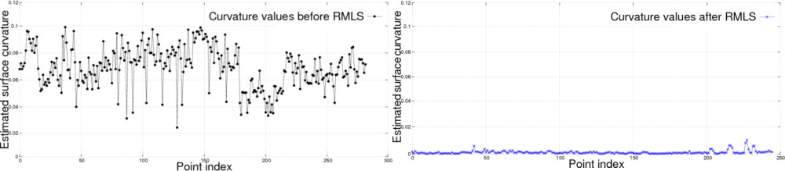

Smoothing and normal estimation based on polynomial reconstruction¶
This tutorial explains how a Moving Least Squares (MLS) surface reconstruction method can be used to smooth and resample noisy data. Please see an example in the video below:
Some of the data irregularities (caused by small distance measurement errors) are very hard to remove using statistical analysis. To create complete models, glossy surfaces as well as occlusions in the data must be accounted for. In situations where additional scans are impossible to acquire, a solution is to use a resampling algorithm, which attempts to recreate the missing parts of the surface by higher order polynomial interpolations between the surrounding data points. By performing resampling, these small errors can be corrected and the “double walls” artifacts resulted from registering multiple scans together can be smoothed.

On the left side of the figure above, we see the effect or estimating surface normals in a dataset comprised of two registered point clouds together. Due to alignment errors, the resultant normals are noisy. On the right side we see the effects of surface normal estimation in the same dataset after it has been smoothed with a Moving Least Squares algorithm. Plotting the curvatures at each point as a measure of the eigenvalue relationship before and after resampling, we obtain:
To approximate the surface defined by a local neighborhood of points p1, p2 … pk at a point q we use a bivariate polynomial height function defined on a on a robustly computed reference plane.
The code¶
First, create a file, let’s say, resampling.cpp in your favorite
editor, and place the following inside it:
You should be able to find the input file at pcl/test/bun0.pcd.
The explanation¶
Now, let’s break down the code piece by piece.
as the example PCD has only XYZ coordinates, we load it into a PointCloud<PointXYZ>. These fields are mandatory for the method, other ones are allowed and will be preserved.
if normal estimation is not required, this step can be skipped.
the first template type is used for the input and output cloud. Only the XYZ dimensions of the input are smoothed in the output.
polynomial fitting could be disabled for speeding up smoothing. Please consult the code API (:pcl:`MovingLeastSquares <pcl::MovingLeastSquares>`) for default values and additional parameters to control the smoothing process.
if the normals and the original dimensions need to be in the same cloud, the fields have to be concatenated.
Compiling and running the program¶
Add the following lines to your CMakeLists.txt file:
After you have made the executable, you can run it. Simply do:
$ ./resampling
You can view the smoothed cloud for example by executing:
$ pcl_viewer bun0-mls.pcd